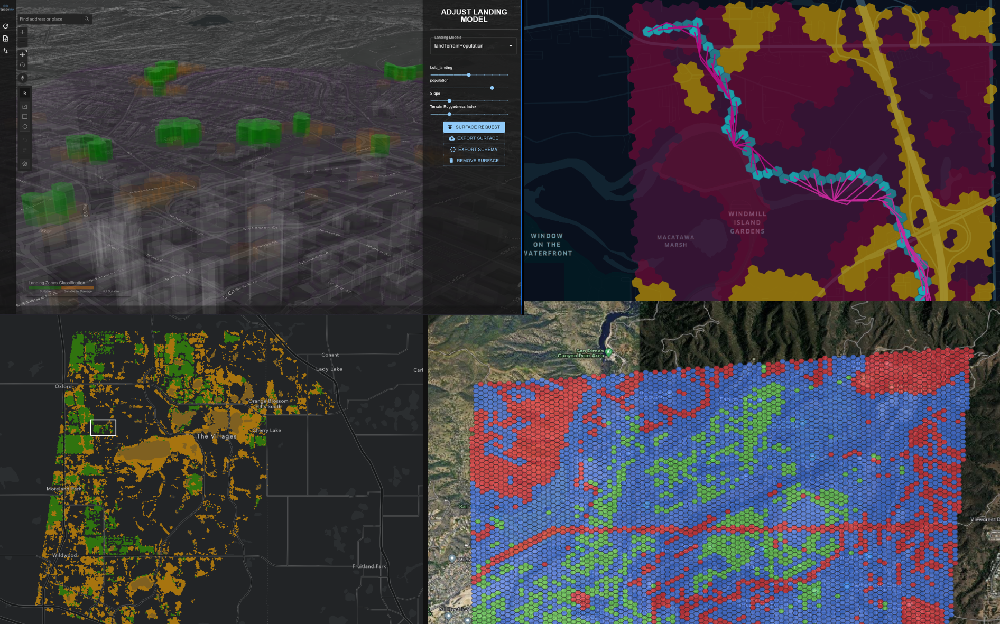
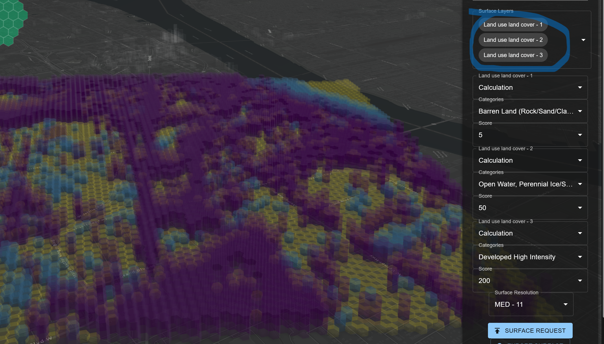

<!DOCTYPE html>
<html lang="en">
  <head>
    <meta charset="utf-8" />
    <meta name="viewport" content="width=device-width, initial-scale=1.0, maximum-scale=1.0, user-scalable=no" />

    <title></title>
    <link rel="stylesheet" href="dist/reveal.css" />
    <link rel="stylesheet" href="dist/theme/black.css" id="theme" />
    <link rel="stylesheet" href="plugin/highlight/zenburn.css" />
	<link rel="stylesheet" href="css/layout.css" />
	<link rel="stylesheet" href="plugin/customcontrols/style.css">
	<link rel="stylesheet" href="plugin/chalkboard/style.css">

	<link rel="stylesheet" href="plugin/reveal-pointer/pointer.css" />


    <script defer src="dist/fontawesome/all.min.js"></script>

	<script type="text/javascript">
		var forgetPop = true;
		function onPopState(event) {
			if(forgetPop){
				forgetPop = false;
			} else {
				parent.postMessage(event.target.location.href, "app://obsidian.md");
			}
        }
		window.onpopstate = onPopState;
		window.onmessage = event => {
			if(event.data == "reload"){
				window.document.location.reload();
			}
			forgetPop = true;
		}

		function fitElements(){
			const itemsToFit = document.getElementsByClassName('fitText');
			for (const item in itemsToFit) {
				if (Object.hasOwnProperty.call(itemsToFit, item)) {
					var element = itemsToFit[item];
					fitElement(element,1, 1000);
					element.classList.remove('fitText');
				}
			}
		}

		function fitElement(element, start, end){

			let size = (end + start) / 2;
			element.style.fontSize = `${size}px`;

			if(Math.abs(start - end) < 1){
				while(element.scrollHeight > element.offsetHeight){
					size--;
					element.style.fontSize = `${size}px`;
				}
				return;
			}

			if(element.scrollHeight > element.offsetHeight){
				fitElement(element, start, size);
			} else {
				fitElement(element, size, end);
			}		
		}


		document.onreadystatechange = () => {
			fitElements();
			if (document.readyState === 'complete') {
				if (window.location.href.indexOf("?export") != -1){
					parent.postMessage(event.target.location.href, "app://obsidian.md");
				}
				if (window.location.href.indexOf("print-pdf") != -1){
					let stateCheck = setInterval(() => {
						clearInterval(stateCheck);
						window.print();
					}, 250);
				}
			}
	};


        </script>
  </head>
  <body>
    <div class="reveal">
      <div class="slides"><section  data-markdown><script type="text/template"><!-- .slide: class="drop" data-background-size="fill" data-background-opacity="0.3" data-background-image="images/demoBackground.png" -->
<div class="" style="position: absolute; left: 0px; top: 0px; height: 700px; width: 960px; min-height: 700px; display: flex; flex-direction: column; align-items: center; justify-content: center" absolute="true">

## AirHub Landings 
### Product Evolution 
9-29-2023   
Theo Reuter/Eric Kerney & Solutions Staff<!-- .element: class="small-txt" -->



<style>
	.medium-txt{ font-size: 30px;  }
	.small-txt{ font-size: xx-large; line-height: 1.4; z-index:999; }
	.smaller-txt{ font-size: x-large; }
	.title:after  {content:"Slide MetaData Demo"}
	.context:after {content: "Fake Meeting Somewhere 2022-08-25";}
	.author:after   {content: "My Name";}
</style>
</div></script></section><section  data-markdown><script type="text/template"><!-- .slide: class="drop" data-background-size="fill" data-background-opacity="0.3" data-background-image="images/demoBackground.png" -->
<div class="" style="position: absolute; left: 0px; top: 0px; height: 700px; width: 960px; min-height: 700px; display: flex; flex-direction: column; align-items: center; justify-content: center" absolute="true">

### Emergency Landings
### Strong Signals
- Primary deliverable for UPS and Spright Insights Projects<!-- .element: class="small-txt" -->
- Required for FAA Part 135 Commercial Drone Certification<!-- .element: class="small-txt" -->
- Component of incoming major projects: DroneDome, NYC<!-- .element: class="small-txt" -->


</div></script></section><section  data-markdown><script type="text/template"><!-- .slide: class="drop" data-background-size="fill" data-background-opacity="0.3" data-background-image="images/demoBackground.png" -->
<div class="" style="position: absolute; left: 0px; top: 0px; height: 700px; width: 960px; min-height: 700px; display: flex; flex-direction: column; align-items: center; justify-content: center" absolute="true">

1. **UPS Prototype Concept *(2021/2022)***
2. **Refactor Codebase *(2022)***
3. **Insights Product Prototype *(2023)***
    - Improve flexiblity, customization, repeatability<!-- .element class="small-txt" -->
    - Complex analysis of features - beyond presence/absence<!-- .element class="small-txt" -->
    - Add hard filter - always avoid critical infrastructure<!-- .element class="small-txt" --> 
    - Demo App Landings POC allows user to customize model<!-- .element class="small-txt" --> 

</div></script></section><section  data-markdown><script type="text/template"><!-- .slide: class="drop" data-background-size="fill" data-background-opacity="0.3" data-background-image="images/demoBackground.png" -->
<div class="" style="position: absolute; left: 0px; top: 0px; height: 700px; width: 960px; min-height: 700px; display: flex; flex-direction: column; align-items: center; justify-content: center" absolute="true">

<div style="position:relative; width:108%; height:0px; padding-bottom:62%;">
    <iframe style="position:absolute; left:0; top:0; width:100%; height:100%"
        frameborder="0" src="https://salmon-moss-028a04d10.2.azurestaticapps.net/">
    </iframe>
</div>
</div></script></section><section  data-markdown><script type="text/template"><!-- .slide: class="drop" data-background-size="fill" data-background-opacity="0.0" data-background-image="images/demoBackground.png" -->
<div class="" style="position: absolute; left: 0px; top: 0px; height: 700px; width: 960px; min-height: 700px; display: flex; flex-direction: column; align-items: center; justify-content: center" absolute="true">

4.  **Next Steps...**
    - Not just "Emergency" Landings...<!-- .element class="small-txt" -->
    - Add POC findings to product pipeline<!-- .element class="small-txt" -->
    - Mature surface generator to enable landing identification<!-- .element class="small-txt" -->
    - Identify suitable rooftop landing locations buildings+LiDAR<!-- .element class="small-txt" -->
    - Continued feedback on development and Landings Models!<!-- .element class="small-txt" -->
    - Routing to landings<!-- .element class="small-txt" -->

<div style="position:absolute; width:120%; height:0px; padding-bottom:120%; z-index:-999; opacity: 0.05;">
    <iframe style="position:absolute; left:0; top:0; width:100%; height:100%"
        frameborder="0" src="https://airspacelink.com">
    </iframe>
</div>
</div></script></section></div>
    </div>

    <script src="dist/reveal.js"></script>

    <script src="plugin/markdown/markdown.js"></script>
    <script src="plugin/highlight/highlight.js"></script>
    <script src="plugin/zoom/zoom.js"></script>
    <script src="plugin/notes/notes.js"></script>
    <script src="plugin/math/math.js"></script>
	<script src="plugin/mermaid/mermaid.js"></script>
	<script src="plugin/chart/chart.min.js"></script>
	<script src="plugin/chart/plugin.js"></script>
	<script src="plugin/customcontrols/plugin.js"></script>
	<script src="plugin/chalkboard/plugin.js"></script>
	<script src="plugin/reveal-pointer/pointer.js"></script>

    <script>
      function extend() {
        var target = {};
        for (var i = 0; i < arguments.length; i++) {
          var source = arguments[i];
          for (var key in source) {
            if (source.hasOwnProperty(key)) {
              target[key] = source[key];
            }
          }
        }
        return target;
      }

	  function isLight(color) {
		let hex = color.replace('#', '');

		// convert #fff => #ffffff
		if(hex.length == 3){
			hex = `${hex[0]}${hex[0]}${hex[1]}${hex[1]}${hex[2]}${hex[2]}`;
		}

		const c_r = parseInt(hex.substr(0, 2), 16);
		const c_g = parseInt(hex.substr(2, 2), 16);
		const c_b = parseInt(hex.substr(4, 2), 16);
		const brightness = ((c_r * 299) + (c_g * 587) + (c_b * 114)) / 1000;
		return brightness > 155;
	}

	var bgColor = getComputedStyle(document.documentElement).getPropertyValue('--r-background-color').trim();
	var isLight = isLight(bgColor);

	if(isLight){
		document.body.classList.add('has-light-background');
	} else {
		document.body.classList.add('has-dark-background');
	}

      // default options to init reveal.js
      var defaultOptions = {
        controls: true,
        progress: true,
        history: true,
        center: true,
        transition: 'default', // none/fade/slide/convex/concave/zoom
        plugins: [
          RevealMarkdown,
          RevealHighlight,
          RevealZoom,
          RevealNotes,
          RevealMath.MathJax3,
		  RevealMermaid,
		  RevealChart,
		  RevealCustomControls,
	      RevealPointer,
		  RevealChalkboard, 
        ],


    	allottedTime: 120 * 1000,

		mathjax3: {
			mathjax: 'plugin/math/mathjax/tex-mml-chtml.js',
		},
		markdown: {
		  gfm: true,
		  mangle: true,
		  pedantic: false,
		  smartLists: false,
		  smartypants: false,
		},

		mermaid: {
			theme: isLight ? 'default' : 'dark',
		},

		customcontrols: {
			controls: [
				{id: 'toggle-overview',
				title: 'Toggle overview (O)',
				icon: '<i class="fa fa-th"></i>',
				action: 'Reveal.toggleOverview();'
				},
				{ icon: '<i class="fa fa-pen-square"></i>',
				title: 'Toggle chalkboard (B)',
				action: 'RevealChalkboard.toggleChalkboard();'
				},
				{ icon: '<i class="fa fa-pen"></i>',
				title: 'Toggle notes canvas (C)',
				action: 'RevealChalkboard.toggleNotesCanvas();'
				},
			]
		},
      };

      // options from URL query string
      var queryOptions = Reveal().getQueryHash() || {};

      var options = extend(defaultOptions, {"width":960,"height":700,"margin":0,"controls":true,"progress":true,"slideNumber":false,"transition":"fade","transitionSpeed":"normal"}, queryOptions);
    </script>

    <script>
      Reveal.initialize(options);
    </script>
  </body>

  <!-- created with Advanced Slides -->
</html>
